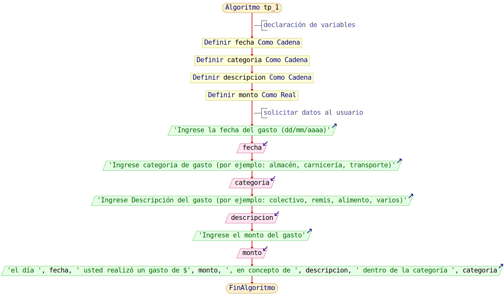

Enunciado
Se desea desarrollar un programa en lenguaje Python que permita a los usuarios llevar un registro básico de sus gastos diarios. El sistema debe solicitar al usuario que ingrese los siguientes datos:
- Monto gastado (por ejemplo: 1500.50).
- Categoría del gasto (por ejemplo: almacén, carnicería, transporte).
- Descripción del gasto (por ejemplo: colectivo, remis, alimento, varios).
- Fecha en que se realizó el gasto (por ejemplo: "22/05/2024").
El programa debe almacenar esta información en variables y luego mostrar en pantalla los valores ingresados.
Requisitos Mínimos
- Elaborar un pseudocódigo que represente la lógica del programa.
pseudocódigo del Taller
Se realiza expresión del pseudocódigo, que logró correrse correctamente en PSeINT
Algoritmo tp_1
// declaración de variables
Definir fecha Como Cadena
Definir categoria Como Cadena
Definir descripcion Como Cadena
Definir monto Como Real
// solicitar datos al usuario
Escribir 'Ingrese la fecha del gasto (dd/mm/aaaa)'
Leer fecha
Escribir 'Ingrese categoria de gasto (por ejemplo: almacén, carnicería, transporte)'
Leer categoria
Escribir 'Ingrese Descripción del gasto (por ejemplo: colectivo, remis, alimento, varios)'
Leer descripcion
Escribir 'Ingrese el monto del gasto'
Leer monto
Escribir 'el día ', fecha, ' usted realizó un gasto de $', monto, ', en concepto de ', descripcion, ' dentro de la categoría ', categoria
FinAlgoritmo
Algoritmo del Programa
